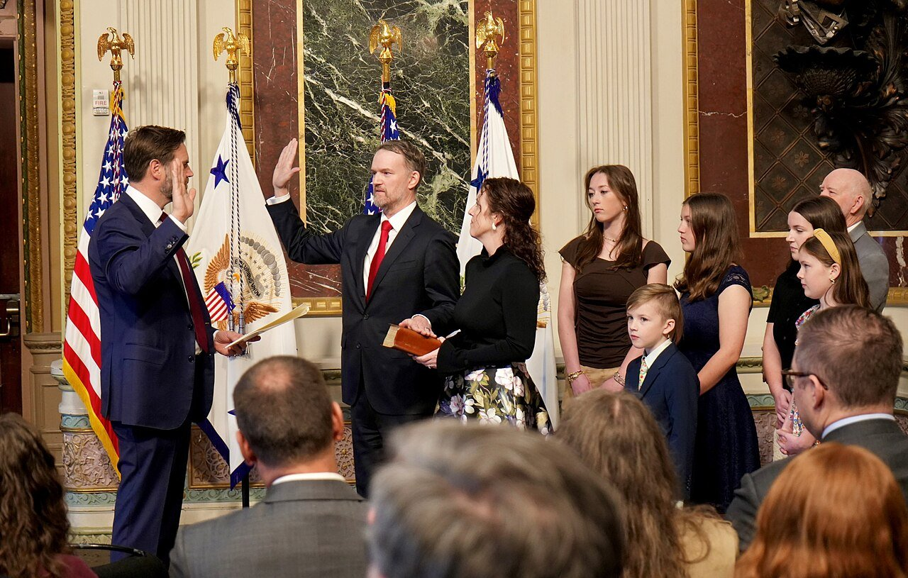
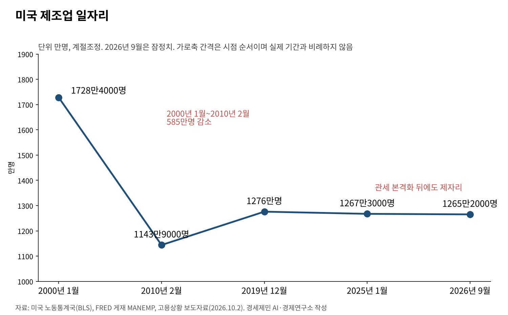
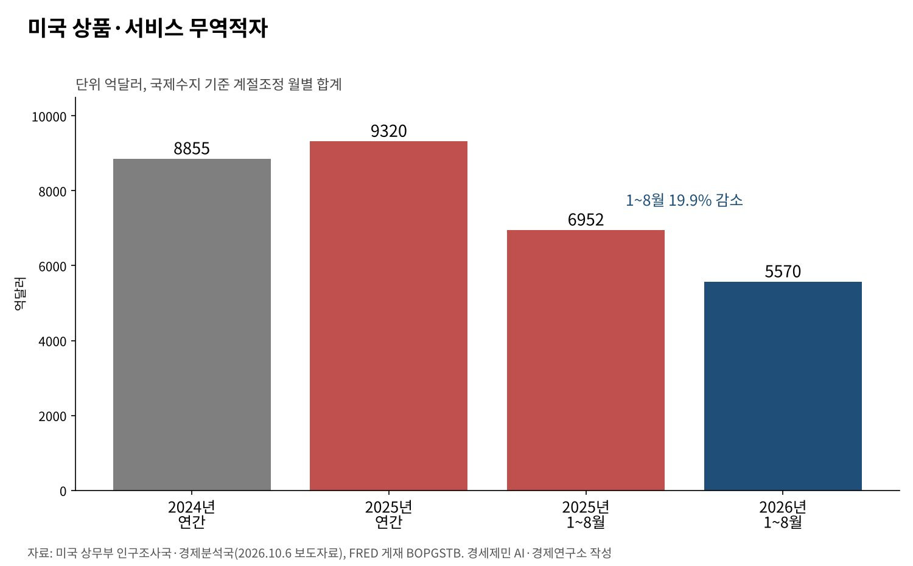

[트럼프 관세전쟁⑨] 자유무역협정 전도사 미국의 역설, USMCA 갱신 미루고 관세로 다시 짠다
NAFTA·WTO·중국 가입·한미FTA, 자유무역 질서를 짠 미국이 관세로 돌아섰다
제조업 일자리 2000년 1728만명에서 2026년 9월 1265만명, 관세 뒤에도 제자리
7월 1일 USMCA 공동검토서 "갱신 안 해", 1~8월 무역적자는 19.9% 줄어
AI경세제민=김갑봉 기자 | 미국은 30년 넘게 자유무역협정(FTA)의 전도사였다. 1994년 북미자유무역협정(NAFTA)을 띄웠고 1995년 세계무역기구(WTO) 출범과 함께 회원국이 됐다. 2012년에는 한미 FTA를 발효했다.
그 미국이 지금은 협정 상대국에도 관세를 매긴다. 7월 1일 미국·멕시코·캐나다 협정(USMCA) 공동검토에서 미국은 협정을 갱신하지 않았다. 한국산 상품에는 무역법 301조로 12.5%가 붙는다.
자유무역을 짠 나라가 왜 관세장벽을 쌓는가. 답은 제조업 일자리와 무역적자에 있다. 두 숫자가 관세 뒤에 어떻게 움직였는지, 협정 질서가 어떻게 바뀌는지 미국 정부 통계로 짚는다.

자유무역 질서를 짠 나라
NAFTA는 1994년 1월 1일 발효했다. WTO는 1995년 1월 1일 미국을 첫 회원국으로 품고 출범했다. 중국은 2001년 12월 11일 WTO에 들어갔다. 한미 FTA는 2012년 3월 15일 발효했다.
NAFTA는 2020년 7월 1일 USMCA로 바뀌었다. 세 나라는 협정 규정에 따라 함께 검토해 연장 여부를 정한다. 발효 6년째인 올해 7월 1일 첫 공동검토가 열렸다.
미국은 이 질서로 값싼 수입품과 세계 자본을 얻었다. 비용은 특정 지역의 제조업 노동자에게 몰렸다. 자유무역의 이익은 넓게 퍼지고 손실은 좁게 쌓인다는 점이 오늘의 반작용을 낳았다.
차이나 쇼크가 남긴 상처
노동통계국 자료로 미국 제조업 일자리는 2000년 1월 1728만4000명이었다. 2010년 2월에는 1143만9000명까지 줄었다. 10년 사이 585만명가량이 사라졌다.
데이비드 오터 등은 중국산 수입 경쟁이 1990~2007년 미국 제조업 고용 감소의 4분의 1을 설명한다고 분석했다. 수입 충격이 큰 지역일수록 실업이 늘고 임금이 내렸다.
대런 아세모글루 등은 1999~2011년 중국산 수입 경쟁으로 미국에서 일자리 200만~240만개가 순감했다고 추정했다. 충격이 큰 지역에서는 실업급여·장애급여 같은 이전지출이 크게 늘었다.
노동경제학의 눈으로 보면 문제는 무역 자체보다 조정 비용이다. 일자리를 잃은 노동자가 다른 산업, 다른 지역으로 옮기지 못했다. 그 공백을 메울 정책이 약했던 곳에서 관세 요구가 커졌다.

관세 뒤에도 제조업 일자리는 제자리
제조업 일자리는 2019년 12월 1276만명이었다. 관세가 본격화하기 직전인 2025년 1월 1267만3000명, 올해 9월 1265만2000명이다. 노동통계국은 지난해 12월 저점보다 7만2000명 늘었다고 밝혔다.
관세로 공장을 되찾는다는 목표에 견주면 아직 성과는 숫자로 드러나지 않는다. 2018~2019년 관세를 분석한 연준 연구도 비슷했다. 관세에 많이 노출된 제조업에서 고용이 상대적으로 줄었다.
그 연구는 수입 중간재 값이 오른 원가 효과와 상대국 보복관세가 보호 효과를 넘었다고 봤다. 공장은 수입 부품으로 돌아간다. 부품에 매긴 관세는 미국 공장의 원가가 된다.
무역적자는 줄었지만 상대가 바뀌었다
상무부 월간 통계를 더하면 상품·서비스 무역적자는 2024년 8855억달러, 2025년 9320억달러다. 지난해 1분기에는 월 적자가 1171억~1330억달러로 크게 불었다.
올해 1~8월 적자는 5570억달러로 1년 전 6952억달러보다 19.9% 줄었다. 수출이 11.8% 늘어 수입 증가율 4.4%를 앞섰다. 다만 8월 한 달 적자는 1056억달러로 7월보다 127억달러 늘었다.
8월 상품수지 적자는 멕시코 277억달러, 베트남 240억달러, 중국 164억달러다. EU는 110억달러, 한국은 94억달러다. 뉴욕연준은 미국 비석유 수입에서 중국산 몫이 지난해 10% 밑으로 내려갔다고 봤다.
무역수지는 결국 그 나라의 저축과 투자의 차이다. 관세로 한 나라의 적자를 줄여도 국내 저축이 늘지 않으면 적자는 다른 나라로 옮겨 간다. 중국에서 멕시코·베트남으로 옮겨 간 적자가 그 모습이다.

협정을 다시 쓰는 미국
7월 1일 USMCA 공동검토에서 무역대표부는 "USMCA는 갱신되지 않는다"고 밝혔다. 협정은 문제를 푸는 동안 효력을 유지한다. 무역대표부는 10월 2일 2027년 공동검토를 위한 의견수렴을 시작했다.
캐나다와는 충돌이 커졌다. 미국은 7월 20일 1930년 관세법 338조로 캐나다산 자동차·주류·유제품 약 200억달러어치에 50% 추가 관세를 매기겠다고 밝혔다. 9월 8일에는 일부 품목의 수입 금지로 넓혔다.
한미 FTA도 관세 장벽을 막지 못한다. 한국산 자동차는 232조로 15%, 일반 상품은 301조로 기본관세 포함 12.5%를 문다. FTA의 무관세 약속 위에 안보와 강제노동을 명분으로 한 관세가 덧씌워졌다.
미국은 다자 협정 대신 「상호무역협정」이라는 양자 합의를 늘린다. 7월 21일 요르단과도 서명했다. 상대국의 규제 변화를 받아 내는 방식이다. 이 협정으로 강제노동 수입 금지를 약속한 나라는 301조에서 10%를 받았다.
자유무역의 규칙을 만든 미국이 이제 규칙보다 협상력으로 무역을 관리한다. 관세로 일자리를 되찾는다는 약속은 아직 고용 통계로 확인되지 않았다. 한국은 협정 문구보다 미국의 국내 사정을 먼저 읽어야 한다.
참고문헌
기관 자료
- 미국 무역대표부(USTR), "Ambassador Greer Issues Statement on USMCA Joint Review", 2026년 7월 1일. https://ustr.gov/about/policy-offices/press-office/press-releases/2026/july/ambassador-greer-issues-statement-usmca-joint-review
- 미국 무역대표부(USTR), "USTR Seeks Public Comment on the 2027 Joint Review of USMCA", 2026년 10월 2일. https://ustr.gov/about/policy-offices/press-office/press-releases/2026/october/ustr-seeks-public-comment-2027-joint-review-usmca
- 미국 무역대표부(USTR), "Ambassador Greer Issues Statement on President Trump Imposing Section 338 Tariffs on Canada", 2026년 7월 20일. https://ustr.gov/about/policy-offices/press-office/press-releases/2026/july/ambassador-greer-issues-statement-president-trump-imposing-section-338-tariffs-canada
- 미국 무역대표부(USTR), "Ambassador Greer Issues Statement on President Trump's Response to Canada's Continued Retaliation Against the United States", 2026년 9월 8일. https://ustr.gov/about/policy-offices/press-office/press-releases/2026/september/ambassador-greer-issues-statement-president-trumps-response-canadas-continued-retaliation-against
- 미국 무역대표부(USTR), "Ambassador Greer Signs U.S.-Jordan Agreement on Reciprocal Trade", 2026년 7월 21일. https://ustr.gov/about/policy-offices/press-office/press-releases/2026/july/ambassador-greer-signs-us-jordan-agreement-reciprocal-trade
- 미국 무역대표부(USTR), "USTR Takes Action in Forced Labor Section 301 Investigations", 2026년 7월 23일. https://ustr.gov/about/policy-offices/press-office/press-releases/2026/july/ustr-takes-action-forced-labor-section-301-investigations
- 미국 무역대표부(USTR), "U.S.-Korea Free Trade Agreement", 2026년 10월 21일 열람. https://ustr.gov/trade-agreements/free-trade-agreements/korus-fta
- 미국 무역대표부(USTR), "United States-Mexico-Canada Agreement", 2026년 10월 21일 열람. https://ustr.gov/trade-agreements/free-trade-agreements/united-states-mexico-canada-agreement
- 세계무역기구(WTO), "China and the WTO", "United States of America and the WTO", 2026년 10월 21일 열람. https://www.wto.org/english/thewto_e/countries_e/china_e.htm , https://www.wto.org/english/thewto_e/countries_e/usa_e.htm
- 미국 노동통계국(BLS), "The Employment Situation – September 2026", 2026년 10월 2일. https://www.bls.gov/news.release/empsit.nr0.htm
- 미국 노동통계국(BLS) 자료, 세인트루이스 연준 FRED, "All Employees, Manufacturing(MANEMP)", 2026년 10월 21일 열람. https://fred.stlouisfed.org/data/MANEMP.txt
- 미국 상무부 인구조사국·경제분석국, "U.S. International Trade in Goods and Services, August 2026", 2026년 10월 6일. https://www.census.gov/foreign-trade/Press-Release/current_press_release/ft900.pdf
- 미국 경제분석국(BEA) 자료, 세인트루이스 연준 FRED, "Trade Balance: Goods and Services, Balance of Payments Basis(BOPGSTB)", 2026년 10월 21일 열람. https://fred.stlouisfed.org/data/BOPGSTB.txt
연구 논문과 보고서
- Autor, D. H., Dorn, D., & Hanson, G. H., "The China Syndrome: Local Labor Market Effects of Import Competition in the United States", 『American Economic Review』 103(6), 2013년, pp.2121-2168. https://www.nber.org/papers/w18054
- Acemoglu, D., Autor, D., Dorn, D., Hanson, G. H., & Price, B., "Import Competition and the Great U.S. Employment Sag of the 2000s", 『Journal of Labor Economics』 34(S1), 2016년, pp.S141-S198. https://www.nber.org/papers/w20395
- Flaaen, A., & Pierce, J., "Disentangling the Effects of the 2018-2019 Tariffs on a Globally Connected U.S. Manufacturing Sector", 『Finance and Economics Discussion Series』 2019-086, 연방준비제도이사회, 2019년. https://www.federalreserve.gov/econres/feds/disentangling-the-effects-of-the-2018-2019-tariffs-on-a-globally-connected-us-manufacturing-sector.htm
- Amiti, M., Flanagan, C., Heise, S., & Weinstein, D. E., "Who Is Paying for the 2025 U.S. Tariffs?", 『Liberty Street Economics』(뉴욕연방준비은행), 2026년 2월 12일. https://libertystreeteconomics.newyorkfed.org/2026/02/who-is-paying-for-the-2025-u-s-tariffs/
언론 보도
- 위키백과, "North American Free Trade Agreement"(발효일 교차 확인용), 2026년 10월 21일 열람. https://en.wikipedia.org/wiki/North_American_Free_Trade_Agreement
[사진 출처]
- [사진1] Office of the United States Trade Representative, "Vice President JD Vance swears in Jamieson Greer as U.S. Trade Representative.jpg", 위키미디어 공용, 퍼블릭 도메인. https://commons.wikimedia.org/wiki/File:Vice_President_JD_Vance_swears_in_Jamieson_Greer_as_U.S._Trade_Representative.jpg
※ 이 기사는 AI 프로그램 클로드를 활용해 작성했습니다.
관련기사
- [트럼프 관세전쟁①] 트럼프 관세압박, 미국이라고 다 유리할까
- [트럼프 관세전쟁②] 일본과 베트남은 왜 그래야만 했을까
- [트럼프 관세전쟁③] EU는 왜 어떻게 15%를 수용했나
- [트럼프 관세전쟁④] 「나머지는 15~20%」 발언과 한미 관세협상
저작권자 © AI경세제민 무단전재 및 재배포, AI학습 및 활용 금지